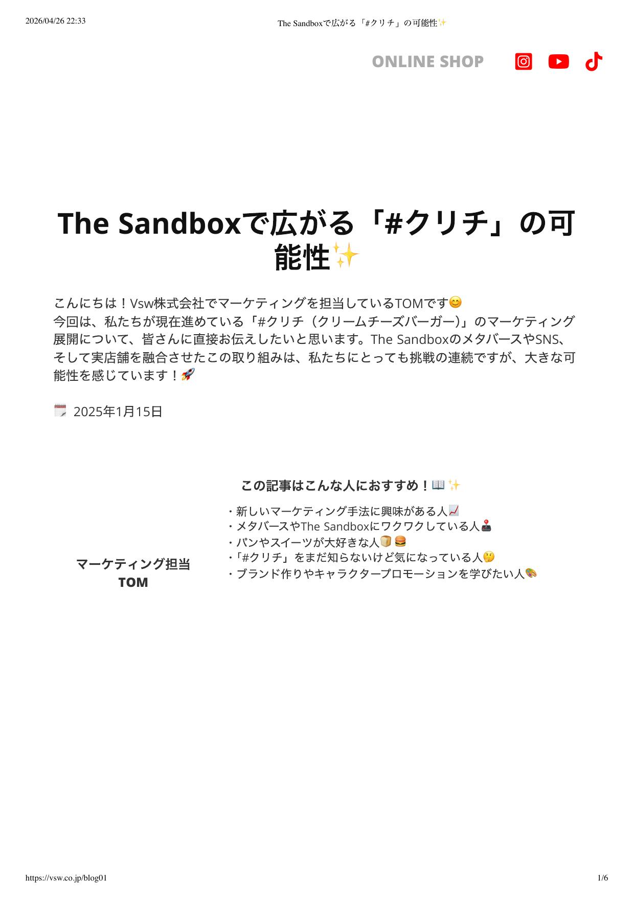
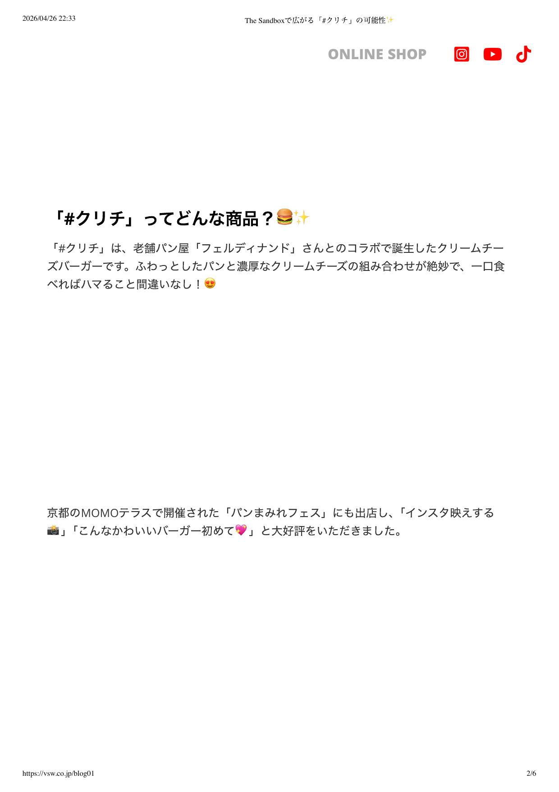
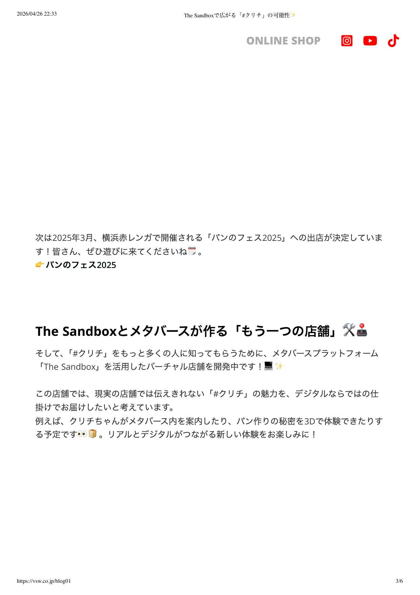
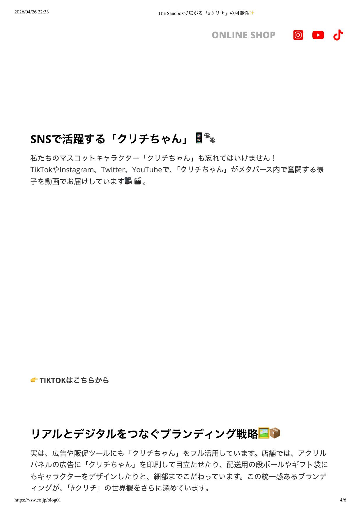
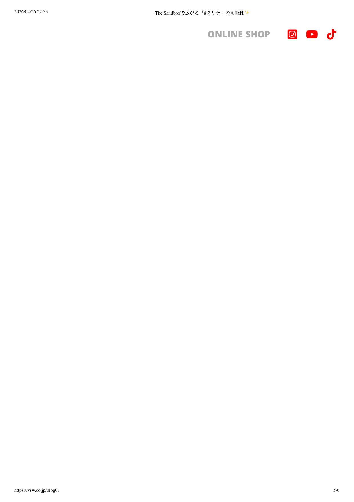
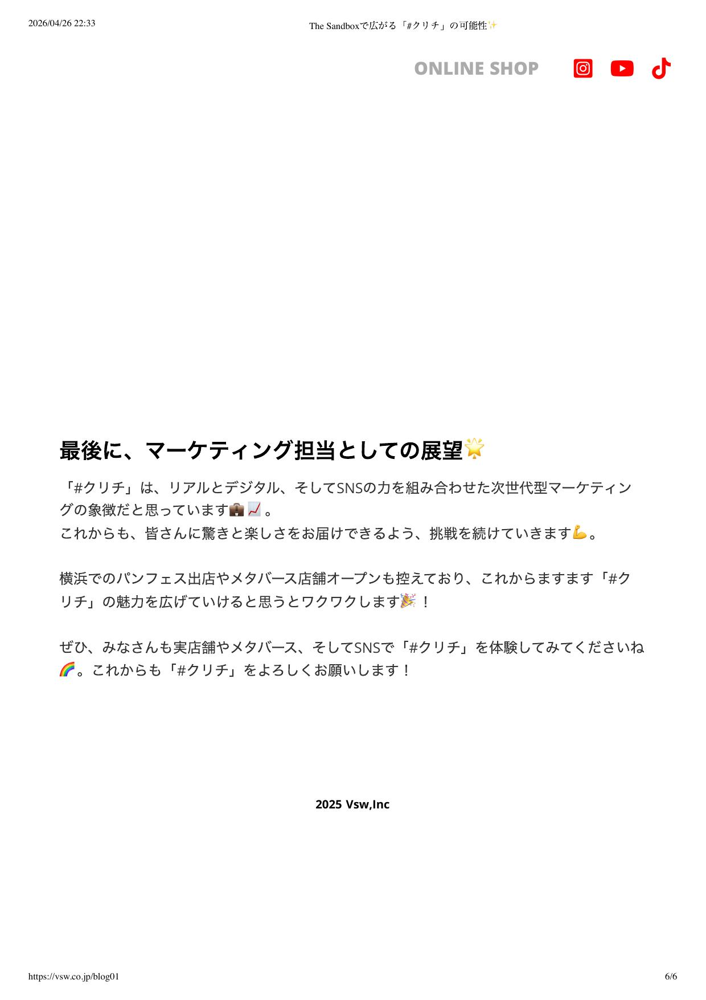

The Sandboxで広がる「#クリチ」の可能性✨

こんにちは！Vsw株式会社でマーケティングを担当しているTOMです😊
今回は、私たちが現在進めている「#クリチ（クリームチーズバーガー）」のマーケティング展開について、皆さんに直接お伝えしたいと思います。The SandboxのメタバースやSNS、そして実店舗を融合させたこの取り組みは、私たちにとっても挑戦の連続ですが、大きな可能性を感じています！🚀
この記事はこんな人におすすめ！📖
- 新しいマーケティング手法に興味がある人📈
- メタバースやThe Sandboxにワクワクしている人🕹️
- パンやスイーツが大好きな人🍞 🍔
- 「#クリチ」をまだ知らないけど気になっている人🤔
- ブランド作りやキャラクタープロモーションを学びたい人🎨
「#クリチ」ってどんな商品？🍔✨
「#クリチ」は、老舗パン屋「フェルディナンド」さんとのコラボで誕生したクリームチーズバーガーです。ふわっとしたパンと濃厚なクリームチーズの組み合わせが絶妙で、一口食べればハマること間違いなし！😍
京都のMOMOテラスで開催された「パンまみれフェス」にも出店し、「インスタ映えする📸」「こんなかわいいバーガー初めて💖」と大好評をいただきました。

次は2025年3月、横浜赤レンガで開催される「パンのフェス2025」への出店が決定しています！皆さん、ぜひ遊びに来てくださいね🗓️
実店舗とメタバースが作る「もう一つの店舗」🛠️🕹️
そして、「#クリチ」をもっと多くの人に知ってもらうために、メタバースプラットフォーム「The Sandbox」を活用したバーチャル店舗を開発中です！💻 ✨
この店舗では、現実の店舗では伝えきれない「#クリチ」の魅力を、デジタルならではの仕掛けでお届けしたいと考えています。例えば、クリチちゃんがメタバース内を案内したり、パン作りの秘密を3Dで体験できたりする予定です👀 🍞
リアルとデジタルがつながる新しい体験をお楽しみに！

SNSで活躍する「クリチちゃん」📱🐾
私たちのマスコットキャラクター「クリチちゃん」も忘れてはいけません！TikTokやInstagram、Twitter、YouTubeで、「クリチちゃん」がメタバース内で奮闘する様子を動画でお届けしています🎥 🎬

リアルとデジタルをつなぐブランディング戦略🖼️📦
実は、広告や販促ツールにも「クリチちゃん」をフル活用しています。店舗では、アクリルパネルの広告に「クリチちゃん」を印刷して目立たせたり、配送用の段ボールやギフト袋にもキャラクターをデザインしたりと、細部までこだわっています。この統一感あるブランディングが、「#クリチ」の世界観をさらに深めています。

最後に、マーケティング担当としての展望🌟
「#クリチ」は、リアルとデジタル、そしてSNSの力を組み合わせた次世代型マーケティングの象徴だと思っています💼 📈
これからも、皆さんに驚きと楽しさをお届けできるよう、挑戦を続けていきます💪
横浜でのパンフェス出店やメタバース店舗オープンも控えており、これからますます「#クリチ」の魅力を広げていけると思うとワクワクします🎉！
ぜひ、みなさんも実店舗やメタバース、そしてSNSで「#クリチ」を体験してみてくださいね🌈
これからも「#クリチ」をよろしくお願いします！
